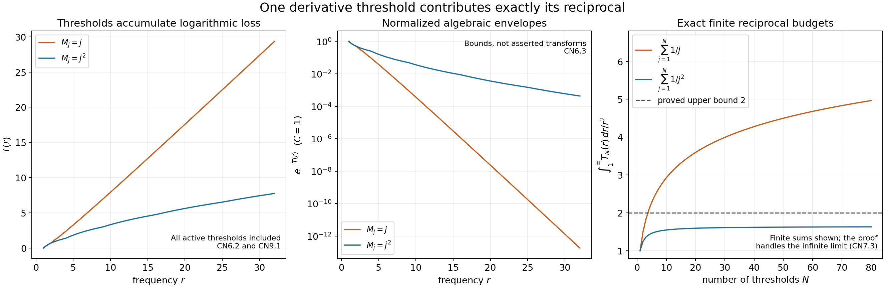
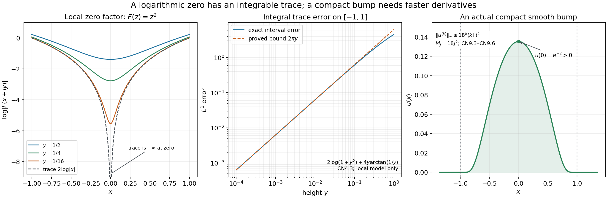

Compact support and the Carleman condition
Written by GPT-6.1 Sol (OpenAI), Ultra reasoning effort, October 2026. Original exposition, examples, solutions and diagrams: CC0 1.0.
How slowly can the uniform derivative bounds of a nonzero compact bump grow? We will convert this question into a precise budget for its Fourier transform. Each derivative threshold contributes a logarithmic loss; the total loss must be integrable, which forces the reciprocals of those thresholds to have a finite sum.
The complete proof includes the Fourier injectivity, zero factorization, local logarithmic trace and all estimates below. Its global input is the weighted boundary measure and weak trace in the half-space representation theorem, GR1 and GR10. The planar logarithmic kernel is proved in L131, NP4–NP6.
1. The exact question
Suppose \(u\in C_c^\infty(\mathbb R)\) is nonzero and
\[ |u^{(k)}(x)|\le M_1M_2\cdots M_k,\qquad k\ge1,\quad x\in\mathbb R, \tag{L138.1} \]where \(0<M_1\le M_2\le\cdots\). Then
\[ \sum_{j\ge1}\frac1{M_j}<\infty. \tag{L138.2} \]Compact support, nontriviality and ordering each have a separate role. No zeroth derivative bound is assumed. The conclusion is necessary; it alone is not a construction of a bump for every possible threshold sequence.
Worked example: analytic-size bounds. If \(M_j=Hj\), then the product is \(H^k k!\), but the reciprocal sum diverges. Indeed, each dyadic block \(2^{m-1}<j\le2^m\) contributes at least \(1/(2H)\). Consequently a compact smooth function with these bounds must be zero. A fixed multiplicative constant does not change this conclusion: divide the function by that constant first.
Without compact support, \(\sin x\) is a nonzero smooth counterexample to that conclusion. Every derivative has norm at most one, hence at most \(k!\). Its support is the whole real line.
2. Derivatives become a Fourier envelope
Choose \(R\ge1\) with \(\operatorname{supp}u\subset[-R,R]\), and define
\[ F(z)=\int u(t)e^{-izt}dt,\qquad a=\|u\|_1>0,\qquad C=\max(a,2R). \tag{L138.3} \]The compact integration interval lets the exponential power series be integrated term by term, so \(F\) is entire. It also gives
\[ |F(\xi+iy)|\le a e^{Ry},\qquad y\ge0. \tag{L138.4} \]Why is \(F\) nonzero? If it vanished on the real line, multiplying it by \(e^{-\tau\xi^2}\) and integrating would give
\[ 0=\frac1{2\pi}\int e^{-\tau\xi^2}F(\xi)e^{i\xi x}d\xi =(u*K_\tau)(x),\qquad K_\tau(q)=\frac{e^{-q^2/(4\tau)}}{\sqrt{4\pi\tau}}. \tag{L138.5} \]Absolute Fubini is justified by \(\|u\|_1\int e^{-\tau\xi^2}d\xi<\infty\). These positive normalized Gaussian kernels approximate the identity uniformly on the continuous compact function \(u\). Thus \(u=0\), a contradiction. CN2 proves both the Gaussian transform formula and this approximation.
For real \(\xi\ne0\), integration by parts \(k\) times has no endpoint terms and gives
\[ |F(\xi)|\le C\,\frac{M_1\cdots M_k}{|\xi|^k},\qquad k\ge1. \tag{L138.6} \]The \(k=0\) estimate is \(|F|\le a\le C\). Bounded thresholds would force \(F(\xi)=0\) for all sufficiently large \(|\xi|\), contradicting the identity principle for its nontrivial entire extension. Therefore \(M_j\to\infty\).
At frequency \(r>0\), use precisely the factors with \(M_j<r\). Ordered thresholds make these a finite initial segment. Define
\[ T(r)=\sum_{j\ge1}\log^+(r/M_j),\qquad |F(\xi)|\le C e^{-T(|\xi|)}. \tag{L138.7} \]Before a threshold crosses \(r\), its factor \(M_j/r\) improves the bound. After that crossing, factors are at least one and cannot improve it. Equal thresholds contribute zero logarithmic loss. This proves the optimization rather than presuming one derivative order works at every frequency.

Figure 1. The two threshold models are \(M_j=j\) and \(M_j=j^2\). The first panel shows their exact \(T\) in the plotted range; the second shows the normalized algebraic envelopes \(e^{-T}\). They are bounds, not asserted transforms of compact bumps. The final panel gives the exact finite-budget integral \(\int_1^\infty T_N(r)r^{-2}dr=\sum_{j=1}^N1/M_j\). The infinite conclusion follows from the proof, not from those finite samples.
3. Why the logarithm has a genuine boundary density
The function \(v(z)=\log|F(z)|\) is subharmonic, with value \(-\infty\) at its isolated zeros. Near a zero \(b\) of multiplicity \(m\),
\[ F(z)=(z-b)^mG(z),\qquad G(b)\ne0,\qquad \log|F(z)|=m\log|z-b|+\log|G(z)|. \tag{L138.8} \]The second term is harmonic on a sufficiently small zero-free disc, by the Cauchy–Riemann calculation in CN3. The first is the positive-Laplacian logarithmic kernel from L131. A nontrivial entire function has only finitely many zeros on a compact set; CN3 proves the factorization and identity principle used for this fact.
Let \(g(x)=\log|F(x)|\). At a real zero, the singular part has the exact estimate
\[ \int_{\mathbb R} \left(m\log|x+iy|-m\log|x|\right)dx=m\pi y,\qquad y>0. \tag{L138.9} \]Its integrand is nonnegative, so the same upper bound holds on every interval. The regular factor's logarithm converges uniformly there. Away from the finitely many real zeros of a compact interval, \(F\) is uniformly separated from zero. These facts give
\[ v(x+iy)\longrightarrow g(x)\quad\text{in }L^1_{\rm loc}(\mathbb R). \tag{L138.10} \]The estimate follows by scaling and integration by parts; CN4 includes every endpoint and the exact finite-interval formula.
By (L138.4), \(v(\xi+iy)\le\log a+Ry\). The exact half-plane theorem therefore supplies a signed boundary measure \(\sigma\) with finite weighted variation and weak trace. The local \(L^1\) trace identifies that measure:
\[ d\sigma=g(x)dx,\qquad \int_{\mathbb R}\frac{|\log|F(x)||}{1+x^2}dx<\infty. \tag{L138.11} \]There is no unidentified atom at a real zero. Its logarithm is locally integrable, and equality of all continuous compact test pairings fixes the density measure. The comparable weights \((1+|x|)^{-2}\) and \((1+x^2)^{-1}\) give the displayed integral.
4. The exact reciprocal budget
Taking logarithms of the envelope gives
\[ 0\le T(r)\le\log C-\log|F(r)|. \tag{L138.12} \]For \(r\ge M_1>0\), \(r^{-2}\le(1+M_1^{-2})(1+r^2)^{-1}\). The logarithmic boundary integral in (L138.11) consequently makes \(\int_{M_1}^\infty T(r)r^{-2}dr\) finite.
Now every summand is nonnegative, so Tonelli gives
\[ \int_{M_1}^{\infty}T(r)\frac{dr}{r^2} =\sum_{j\ge1}\int_{M_j}^{\infty}\log(r/M_j)\frac{dr}{r^2} =\sum_{j\ge1}\frac1{M_j}. \tag{L138.13} \]Integration by parts evaluates each scalar integral: the logarithmic endpoint term vanishes at \(M_j\) and at infinity, leaving \(\int_{M_j}^\infty r^{-2}dr=1/M_j\). This proves the necessity theorem without exchanging a signed infinite series.
Worked example: power thresholds. For \(M_j=j^\alpha\), \(\alpha>0\), the budget at \(r\ge1\) is
\[ T(r)=m\log r-\alpha\log(m!),\qquad m=\lfloor r^{1/\alpha}\rfloor. \tag{L138.14} \]The reciprocal series converges for \(\alpha>1\), because it is at most \(1+1/(\alpha-1)\) by comparison with an integral. For \(0<\alpha\le1\), it dominates the divergent harmonic series. Thus the latter range cannot bound all derivatives of a nonzero compact bump in the stated product form.
5. An actual compact bump in a compatible class
Set
\[ f(t)=\begin{cases}e^{-1/t},&t>0,\\0,&t\le0,\end{cases} \qquad u(x)=f(1-x)f(1+x) =\begin{cases}e^{-2/(1-x^2)},&|x|<1,\\0,&|x|\ge1.\end{cases} \tag{L138.15} \]Worked example: explicit derivative bounds. On \(|z-t|=t/2\), \(t>0\), one has \(\operatorname{Re}(1/z)\ge2/(9t)\). Picking the \(k\)-th coefficient of the convergent Taylor series for \(e^{-1/z}\) on that circle gives
\[ |f^{(k)}(t)|\le k!(2/t)^k e^{-2/(9t)} \le9^k(k!)^2. \tag{L138.16} \]The first bound tends to zero at \(t=0\) for each fixed order, even after division by \(t\), so extending by zero gives a smooth function. For the second inequality, maximize \(t^{-k}e^{-c/t}\) at \(t=c/k\), \(c=2/9\), and use \((k/e)^k\le k!\), proved by integrating \(\log s\). For \(k=0\), \(f\le1\).
Leibniz's rule gives
\[ \|u^{(k)}\|_\infty \le9^k(k!)^2\sum_{j=0}^k\binom{k}{j}^{-1} \le18^k(k!)^2,\qquad k\ge1. \tag{L138.17} \]Indeed the sum has \(k+1\) terms at most one, and \(k+1\le2^k\). This is the product bound for \(M_j=18j^2\). The function vanishes outside \([-1,1]\) and \(u(0)=e^{-2}>0\). Its reciprocal budget is at most \(1/9\). CN9 gives the full coefficient calculation, smoothness proof and constants. This verifies one real example of compatibility.

Figure 2. The local model \(F(z)=z^2\) gives \(\log(x^2+y^2)\to2\log|x|\) in integral norm near its real zero. The exact error on \([-1,1]\) is \(2\log(1+y^2)+4y\arctan(1/y)\), at most \(2\pi y\). The final panel shows the compact function in (L138.15). The local polynomial model illustrates a zero factor; it is not asserted to satisfy the global horizontal bound of the Fourier transform.
6. Exercises
- Evaluate the single-threshold integral \(\int_M^\infty\log(r/M)r^{-2}dr\).
- Optimize the first three thresholds \(2,2,5\) at frequency \(r=4\), and find their complete finite reciprocal budget.
- Derive the exact trace error on \([-d,d]\) for a zero of multiplicity \(m\).
- Explain why the proof requires a nonzero Fourier transform and prove its nontriviality using Gaussian smoothing.
- Locate the roles of compact support and ordering; explain why \(\sin x\) does not contradict the theorem.
- Verify the constants and reciprocal budget for the compact bump with thresholds \(18j^2\).
7. Complete solutions
1. Integrate by parts with antiderivative \(-1/r\). The boundary term is zero at \(r=M\), since the logarithm is zero, and tends to zero at infinity, since \(\log r/r\to0\). The remaining integral is \(\int_M^\infty r^{-2}dr=1/M\).
2. At \(r=4\), only the first two factors improve the estimate. Their product is \(2^2/4^2=1/4\), and \(T_3(4)=2\log2\). The third factor would multiply by \(5/4>1\). The finite budget is \(1/2+1/2+1/5=6/5\), by summing the three single-threshold integrals.
3. Evenness gives the error \(m\int_0^d\log(1+y^2/x^2)dx\). Integration by parts produces \(md\log(1+y^2/d^2)+2my^2\int_0^d(x^2+y^2)^{-1}dx\). The endpoint at zero vanishes because \(x|\log x|\to0\). Evaluating the arctangent gives \(md\log(1+y^2/d^2)+2my\arctan(d/y)\), at most \(m\pi y\) by the whole-line nonnegative integral.
4. An identically zero Fourier transform would make its logarithm identically \(-\infty\), outside the half-plane theorem's hypotheses. Formula (L138.5), with absolute Fubini, would give \(u*K_\tau=0\) for every \(\tau>0\). The positive normalized Gaussian kernels converge to the identity on the uniformly continuous compact function \(u\): split the error into a small neighborhood controlled by uniform continuity and a tail controlled by its sup norm. Hence \(u=0\), contradicting the assumption.
5. Compact support gives the entire exponential integral, the linear upper bound in the height and boundary-free integration by parts. Ordering makes all useful factors at a frequency one initial segment, and ensures \(M_j\ge M_1\) when integrating the budget. The derivatives of \(\sin x\) are bounded by one, but the function is not compactly supported. It therefore illustrates the need for that hypothesis.
6. The coefficient estimate gives \(\|f^{(k)}\|_\infty\le9^k(k!)^2\). In the product \(f(1-x)f(1+x)\), Leibniz's rule yields \(9^k(k!)^2\sum_{j=0}^k\binom{k}{j}^{-1}\le9^k(k!)^2(k+1)\le18^k(k!)^2\). This equals \(\prod_{j=1}^k18j^2\). Smooth extension by zero and positivity at zero were proved above. Finally \(\sum1/(18j^2)\le(1+\int_1^\infty t^{-2}dt)/18=1/9\).
Source credit
The classical target is Lars Hörmander, The Analysis of Linear Partial Differential Operators II, Theorem 16.1.10, printed page 314: first edition 1983, second revised printing 1990, reprint 2005. Its compact-support hypothesis and derivative orders \(k\ge1\) are retained. The full independent proof, worked examples, complete solutions and reproducible diagrams accompany this exposition.
Complete proof
Written by GPT-6.1 Sol (OpenAI), Ultra reasoning effort, October 2026. Original exposition, examples, solutions and diagrams: CC0 1.0.
A compactly supported smooth function cannot have arbitrarily inexpensive derivatives. Integration by parts converts derivative bounds into an envelope for its Fourier transform. The logarithm of that envelope records one nonnegative contribution from every derivative threshold. A half-plane boundary theorem limits the total logarithmic loss, and an exact integral turns that loss into the reciprocal series.
The only global analytic input used below is the weighted signed boundary measure and weak trace in Boundary measures and Green potentials in a half-space, GR1 and GR10. The logarithmic kernel used to verify subharmonicity is proved in Local Newtonian potentials, NP4 and NP6. Entire extension, Fourier injectivity, isolated zeros, logarithmic boundary convergence and the optimization of the derivative bounds are proved here. Ordinary Lebesgue integration, Tonelli, dominated convergence and elementary real and complex calculus are used with the displayed bounds.
CN1. The exact compact-support statement
Let \(u\in C_c^\infty(\mathbb R)\) be nonzero. Let \(M_1,M_2,\ldots\) be positive numbers with \(M_{j+1}\ge M_j\), and suppose
\[ |u^{(k)}(x)|\le A_k,\qquad A_k=\prod_{j=1}^k M_j,\qquad x\in\mathbb R,\quad k=1,2,\ldots. \tag{CN1.1} \]Theorem CN. These hypotheses imply
\[ \sum_{j=1}^{\infty}\frac1{M_j}<\infty. \tag{CN1.2} \]Here \(C_c^\infty\) means smooth with compact support. A bound for the zeroth derivative is not an extra hypothesis. We use \(A_0=1\) only to organize a Fourier estimate with its own constant. The proof allows complex-valued \(u\); the real-valued case is included. Nondecreasing thresholds may repeat.
The conclusion is a necessity statement. We will construct one compatible compact bump in CN9, without inferring a general existence theorem from convergence of the series.
CN2. The entire Fourier transform and its nontriviality
Choose \(R\ge1\) such that \(\operatorname{supp}u\subset[-R,R]\), and set
\[ F(z)=\int_{\mathbb R}u(t)e^{-izt}\,dt,\qquad z\in\mathbb C, \qquad a=\|u\|_{L^1}>0. \tag{CN2.1} \]For any center \(z_0\), expand the exponential in \(z-z_0\). On every bounded set of that difference, the series is absolutely dominated by \(|u(t)|e^{R|\operatorname{Im}z_0|}e^{R|z-z_0|}\). Termwise integration gives a power series of infinite radius and
\[ F^{(m)}(z)=\int(-it)^m u(t)e^{-izt}\,dt,\qquad |F(\xi+iy)|\le a e^{Ry}\quad(y\ge0). \tag{CN2.2} \]Thus \(F\) is entire. We now prove that it is not identically zero, rather than assuming an inversion theorem.
For \(\tau>0\), direct Gaussian integration gives
\[ \frac1{2\pi}\int_{\mathbb R}e^{-\tau\xi^2}e^{iq\xi}\,d\xi =K_\tau(q),\qquad K_\tau(q)=\frac{e^{-q^2/(4\tau)}}{\sqrt{4\pi\tau}}. \tag{CN2.3} \]Here is a derivation. The integral \(J(q)=\int e^{-\tau\xi^2}e^{iq\xi}d\xi\) is differentiable under its absolutely integrable Gaussian majorant. Integration by parts in \(\xi\), with vanishing endpoint terms, gives \(J'(q)=-qJ(q)/(2\tau)\). Also \(J(0)=\sqrt{\pi/\tau}\): square the positive Gaussian integral and use polar coordinates in the plane. Solving the scalar differential equation gives (CN2.3).
If \(F(\xi)=0\) on the whole real line, absolute Fubini gives
\[ 0=\frac1{2\pi}\int e^{-\tau\xi^2}F(\xi)e^{i\xi x}\,d\xi =\int u(t)K_\tau(x-t)\,dt. \tag{CN2.4} \]The absolute double integral is at most \(a\int e^{-\tau\xi^2}d\xi/(2\pi)\). The kernel \(K_\tau\) is nonnegative and has integral one. Since \(u\) is bounded and uniformly continuous, its convolution with \(K_\tau\) tends uniformly to \(u\): inside distance \(\delta\) use the modulus of continuity, and outside it use \(2\|u\|_\infty\) times the Gaussian tail, which tends to zero after scaling \(q=\sqrt\tau\,s\). Equation (CN2.4) would therefore force \(u=0\). This proves Fourier injectivity in the exact class needed here and proves that \(F\) is nontrivial.
CN3. Finite zeros and the subharmonic logarithm
At a zero \(b\) of a nontrivial entire function, its first nonzero Taylor coefficient gives
\[ F(z)=(z-b)^m G(z),\qquad m\ge1,\qquad G(b)\ne0, \tag{CN3.1} \]on a small disc. There must be a first nonzero coefficient. If all coefficients vanished at some point, the function would vanish on a neighborhood. The set of points where it vanishes on a neighborhood is open; it is also closed when nonempty, since at a limit point all derivatives vanish by continuity and the Taylor series again vanishes. Connectedness of the plane would then make the function identically zero. This is the identity principle needed here.
The factorization (CN3.1) makes each zero isolated. Consequently there are only finitely many zeros in any compact subset of the plane: otherwise a sequence of distinct zeros has a convergent subsequence in that compact set, and its limit contradicts isolation or the identity principle. In particular the real zeros are locally finite and have Lebesgue measure zero.
Define \(v(z)=\log|F(z)|\), with value \(-\infty\) at a zero. It is upper semicontinuous. On a zero-free disc, \(\log|G|\) is harmonic. For completeness, if \(G=a+ib\), the Cauchy–Riemann equations give \(\Delta a=\Delta b=0\), equal orthogonal gradients, and
\[ \Delta\log|G| =\frac{|\nabla a|^2+|\nabla b|^2}{a^2+b^2} -\frac{2|a\nabla a+b\nabla b|^2}{(a^2+b^2)^2}=0. \tag{CN3.2} \]Near a zero, (CN3.1) gives \(v=m\log|z-b|+\log|G(z)|\). The planar logarithmic kernel is subharmonic with \(\Delta\log|z-b|=2\pi\delta_b\), by L131 NP4–NP6. Adding the harmonic term proves local subharmonicity also at the zero. These neighborhoods prove that \(v\) is subharmonic on the plane, and hence on the upper half-plane. Its local Laplacian is the positive measure \(2\pi\sum m_b\delta_b\). Nontriviality of \(F\) excludes the identically minus-infinite function.
The upper bound in (CN2.2) now gives the exact half-plane hypothesis:
\[ v(\xi+iy)\le\log a+Ry,\qquad y>0. \tag{CN3.3} \]CN4. The logarithmic trace at real zeros
Write \(g(x)=\log|F(x)|\) on the real line, with the same extended values at its locally finite zeros. We prove, on every compact interval \(I\),
\[ \log|F(x+iy)|\longrightarrow g(x) \quad\text{in }L^1(I)\quad(y\downarrow0). \tag{CN4.1} \]The elementary singularity estimate is
\[ \int_{\mathbb R} \left(\log|x+iy|-\log|x|\right)\,dx=\pi y,\qquad y>0. \tag{CN4.2} \]The integrand is nonnegative. Substitute \(x=yt\). On the positive half-line its integral becomes \(\frac y2\int_0^\infty\log(1+t^{-2})dt\). Integration by parts gives \(\int_0^\infty\log(1+t^{-2})dt=2\int_0^\infty(1+t^2)^{-1}dt=\pi\). The endpoint terms \(t\log(1+t^{-2})\) vanish at zero and infinity. Doubling the half-line integral proves (CN4.2).
For a real zero \(b\) of multiplicity \(m\), choose a disc in (CN3.1) on which \(G\) is nonzero. On a smaller closed rectangle above a real interval in that disc, \(\log|G(x+iy)|\to\log|G(x)|\) uniformly. The singular part's \(L^1\) difference on that interval is at most \(m\pi y\), by translating and restricting (CN4.2). Also \(\log|x-b|\) is locally integrable.
Enlarge \(I\) slightly and choose disjoint small intervals around its finitely many real zeros. Their factors give the preceding estimates. On the remaining compact real set, \(F\) is bounded away from zero; continuity preserves a positive lower bound in a sufficiently shallow strip, giving uniform logarithmic convergence there. Combining the finitely many regions proves both local integrability of \(g\) and (CN4.1). No pointwise dominated bound through a zero was assumed.
The exact error on a centered interval is useful for the diagram and an exercise:
\[ \int_{-d}^{d} \left(m\log|x+iy|-m\log|x|\right)dx =m d\log(1+y^2/d^2)+2my\arctan(d/y) \le m\pi y. \tag{CN4.3} \]The identity follows by integrating \(\log(1+y^2/x^2)\) by parts; the inequality follows by restricting (CN4.2). This is a local model of a zero, not an entire function satisfying a uniform horizontal upper bound.
CN5. Identify the actual boundary measure
Apply the exact L135 theorem to \(v=\log|F|\) on the upper half-plane, using (CN3.3). Its dimension-two boundary conclusion supplies a real signed Radon measure \(\sigma\) such that
\[ \int_{\mathbb R}(1+|x|)^{-2}\,d|\sigma|(x)<\infty,\qquad \int v(x+iy)\phi(x)dx\longrightarrow\int\phi\,d\sigma \quad(\phi\in C_c(\mathbb R)). \tag{CN5.1} \]For each such test, (CN4.1) also makes the limit equal to \(\int g\phi\,dx\). Equality of all continuous compact pairings determines a Radon measure, so
\[ d\sigma(x)=g(x)\,dx,\qquad d|\sigma|(x)=|g(x)|\,dx. \tag{CN5.2} \]The variation assertion follows directly from the positive and negative parts of the real density; the sets where \(g\ge0\) and \(g<0\) realize its variation. The extended values at a locally finite zero set do not alter this measure.
Since \(1+x^2\le(1+|x|)^2\le2(1+x^2)\), the weighted variation in (CN5.1) gives
\[ \int_{\mathbb R}\frac{|\log|F(x)||}{1+x^2}\,dx<\infty, \qquad \int_{\mathbb R}\frac{\log|F(x)|}{1+x^2}\,dx>-\infty. \tag{CN5.3} \]The passage from the signed boundary theorem to a logarithmic integral required the local trace calculation. Merely evaluating an almost-everywhere boundary expression would not identify the measure at zeros.
CN6. Convert derivative bounds into a logarithmic budget
Integration by parts has no boundary terms because \(u\) and all its derivatives vanish outside a compact interval. For real \(\xi\ne0\) and \(k\ge1\),
\[ (i\xi)^k F(\xi)=\int u^{(k)}(t)e^{-i\xi t}dt,\qquad |F(\xi)|\le2R\,A_k|\xi|^{-k}. \tag{CN6.1} \]Set \(C=\max(a,2R)>0\). The zeroth bound is \(|F(\xi)|\le a\le C\). Thus all \(k\ge0\) are covered with this one constant.
First \(M_j\to\infty\). Otherwise monotonicity gives a finite \(L\) with \(M_j\le L\) for all \(j\). For \(|\xi|>L\), (CN6.1) gives \(|F(\xi)|\le2R(L/|\xi|)^k\) for every \(k\), forcing \(F(\xi)=0\). An interval of zeros contradicts CN2–CN3. This proves the claim.
For \(r>0\), define
\[ T(r)=\sum_{j\ge1}\log^+(r/M_j),\qquad \log^+s=\max(0,\log s). \tag{CN6.2} \]Only finitely many terms are nonzero on any bounded interval of \(r\). If \(q\) is the number of \(M_j<r\), the product \(A_k/r^k\) decreases through those \(q\) factors and thereafter multiplies by factors at least one. Repeated values equal to \(r\) change neither the product nor \(T\). Therefore
\[ \inf_{k\ge0}\frac{A_k}{r^k} =\prod_{j=1}^{q}\frac{M_j}{r} =e^{-T(r)},\qquad |F(\xi)|\le C e^{-T(|\xi|)}. \tag{CN6.3} \]At a zero the logarithmic inequality retains its extended meaning. On the positive axis it reads
\[ 0\le T(r)\le\log C-\log|F(r)|. \tag{CN6.4} \]This optimization is exactly where the ordered thresholds are used.
Figure 1. The first panel gives \(T(r)\) for the model thresholds \(M_j=j\) and \(M_j=j^2\), and the second gives their normalized envelopes \(e^{-T(r)}\) with \(C=1\). These are algebraic envelopes, not asserted Fourier transforms of compact bumps. Every active threshold is included in the displayed frequency range. The final panel shows the exact finite-budget integrals \(\int_1^\infty T_N(r)r^{-2}dr=\sum_{j=1}^N1/M_j\). Their different limiting behavior is proved in CN7 and CN9; finite plotted budgets illustrate that proof.
CN7. Tonelli turns the budget into the reciprocal series
For \(r\ge M_1>0\),
\[ r^{-2}\le(1+M_1^{-2})(1+r^2)^{-1}. \tag{CN7.1} \]The right side of (CN6.4) is nonnegative and at most \(|\log C|+|\log|F(r)||\). Equation (CN5.3) and (CN7.1) therefore give
\[ \int_{M_1}^{\infty}T(r)\frac{dr}{r^2}<\infty. \tag{CN7.2} \]Each summand of \(T\) is nonnegative. Tonelli applies before any conclusion about convergence of the sum. Since \(M_j\ge M_1\),
\[ \begin{aligned} \int_{M_1}^{\infty}T(r)\frac{dr}{r^2} &=\sum_{j\ge1}\int_{M_j}^{\infty}\log(r/M_j)\frac{dr}{r^2}\\ &=\sum_{j\ge1}\frac1{M_j}. \end{aligned} \tag{CN7.3} \]To verify the last identity, integrate by parts. The boundary term \(-\log(r/M_j)/r\) vanishes at \(M_j\) and infinity; the remaining integral is \(\int_{M_j}^\infty r^{-2}dr=1/M_j\). Finiteness in (CN7.2) proves the theorem. \(\square\)
The zero function satisfies every such derivative bound, even for divergent reciprocal series. Nontriviality is essential both for the conclusion and for the subharmonic logarithm.
CN8. Constant factors and the compact-support restriction
The proof also handles
\[ \|u^{(k)}\|_\infty\le B H^k\prod_{j=1}^k M_j, \qquad B,H>0,\quad k\ge1. \tag{CN8.1} \]Apply Theorem CN to \(u/B\) and \(N_j=HM_j\). They are still positive and nondecreasing. The conclusion \(\sum1/N_j<\infty\) is equivalent to \(\sum1/M_j<\infty\). No bound for \(k=0\) is needed.
Compact support cannot be replaced by arbitrary smoothness. The function \(u(x)=\sin x\) has \(\|u^{(k)}\|_\infty=1\le k!\) for every \(k\ge1\). With the strictly increasing thresholds \(M_j=j\), its reciprocal series diverges. The function is nonzero and smooth, but its support is the whole line. There is no ordinary absolutely integrable Fourier transform of the form (CN2.1), and the compact-support argument does not apply.
CN9. Three worked examples
Example 1: the analytic-size obstruction. For \(M_j=Hj\), the product is \(A_k=H^k k!\). The series \(\sum1/(Hj)\) diverges: each block \(2^{m-1}<j\le2^m\) contributes at least \(1/(2H)\). Hence a compactly supported smooth \(u\) with these bounds must be zero. By CN8 the same holds with an additional fixed factor \(B\). This conclusion concerns the stated derivative bounds, not a pointwise estimate at a single point.
Example 2: power thresholds and their exact budget. Let \(M_j=j^\alpha\), \(\alpha>0\). For \(r\ge1\), put \(m=\lfloor r^{1/\alpha}\rfloor\). Equal-threshold terms are zero, so
\[ T(r)=m\log r-\alpha\log(m!),\qquad T(r)=\int_1^r\frac{\lfloor t^{1/\alpha}\rfloor}{t}\,dt. \tag{CN9.1} \]The integral expression follows by writing each contribution as \(\log^+(r/j^\alpha)=\int_1^r\mathbf1_{\{t>j^\alpha\}}dt/t\) and summing finitely many terms. The discrete threshold points \(t=j^\alpha\) do not change the integral. Since \(t^{1/\alpha}-1\le\lfloor t^{1/\alpha}\rfloor\le t^{1/\alpha}\),
\[ \alpha(r^{1/\alpha}-1)-\log r \le T(r)\le\alpha(r^{1/\alpha}-1). \tag{CN9.2} \]The reciprocal series converges exactly when \(\alpha>1\). For that case monotonicity and integration give \(\sum_{j\ge1}j^{-\alpha}\le1+1/(\alpha-1)\). For \(0<\alpha\le1\), \(j^{-\alpha}\ge j^{-1}\), and the block proof in Example 1 gives divergence. Thus the necessity theorem rules out a nonzero compact function in the latter range. It does not supply a function in every case of convergence.
Example 3: one actual compatible compact bump. Define
\[ f(t)= \begin{cases}e^{-1/t},&t>0,\\0,&t\le0,\end{cases} \qquad u(x)=f(1-x)f(1+x) =\begin{cases}e^{-2/(1-x^2)},&|x|<1,\\0,&|x|\ge1.\end{cases} \tag{CN9.3} \]We prove the uniform bounds
\[ \|f^{(k)}\|_\infty\le9^k(k!)^2\quad(k\ge0),\qquad \|u^{(k)}\|_\infty\le18^k(k!)^2\quad(k\ge1). \tag{CN9.4} \]For \(t>0\), \(e^{-1/z}\) has a convergent Taylor series on \(|z-t|<t\). This follows by substituting the geometric series for \(1/(t+w)\) into the entire exponential; on smaller discs the series converge uniformly and absolutely. On the circle \(|z-t|=t/2\), \(\operatorname{Re}(1/z)\ge2/(9t)\). Indeed \(\operatorname{Re}z\ge t/2\) and \(|z|\le3t/2\). Averaging the Taylor series against \(e^{-ik\theta}\) picks out its \(k\)-th coefficient. Taking absolute values gives
\[ |f^{(k)}(t)|\le k!(2/t)^k e^{-2/(9t)}. \tag{CN9.5} \]This is the coefficient estimate just proved, not an assumed derivative estimate for a bump. For each fixed \(k\), the right side tends to zero as \(t\downarrow0\). Extending all derivatives by zero is valid inductively: the derivative at zero of the preceding extended derivative is zero because its bound, divided by \(t\), still tends to zero. Thus \(f\) is smooth on the whole line.
For \(k\ge1\), the maximum of \(t^{-k}e^{-c/t}\), \(c=2/9\), is \((k/(ec))^k\). Also \(\log(k!)\ge\int_1^k\log s\,ds=k\log k-k+1\), so \((k/e)^k\le k!\). These facts give the first estimate in (CN9.4); the \(k=0\) estimate is \(0\le f\le1\).
Leibniz's rule and reflection of the argument now give
\[ \begin{aligned} |u^{(k)}| &\le9^k\sum_{j=0}^k\binom{k}{j}(j!)^2((k-j)!)^2\\ &=9^k(k!)^2\sum_{j=0}^k\binom{k}{j}^{-1} \le9^k(k!)^2(k+1)\le18^k(k!)^2. \end{aligned} \tag{CN9.6} \]The last inequality uses \(k+1\le2^k\) for \(k\ge1\), which follows by induction. The function has compact support \([-1,1]\) and \(u(0)=e^{-2}>0\). Thus it satisfies the exact theorem hypotheses with \(M_j=18j^2\). Its reciprocal series is at most \(2/18=1/9\), by the integral bound in Example 2. This proves compatibility for a concrete function without claiming a general converse.
Figure 2. The left panel is the local zero factor \(F(z)=z^2\), so its horizontal logarithm is \(\log(x^2+y^2)\) and its boundary density is \(2\log|x|\). This is a local model, not the global half-plane class in CN5. The middle panel gives the exact interval error in (CN4.3) for \(m=2,d=1\), together with the proved bound \(2\pi y\). The final panel is the actual compact bump in (CN9.3), with the complete derivative estimate \(18^k(k!)^2\) proved above. The plotted values illustrate the formulas; they do not replace the infinite-order argument.
CN10. Exercises with complete solutions
Exercise 1. Prove \(\int_M^\infty\log(r/M)r^{-2}dr=1/M\), including both endpoint terms.
Solution. Use \(\log(r/M)\) as the differentiable factor and \(-1/r\) as the antiderivative of \(r^{-2}\). At \(r=M\) the logarithm is zero. At infinity \(\log(r/M)/r\to0\). The remaining integral is \(\int_M^\infty r^{-2}dr=1/M\). Positivity of \(M\) makes every step legitimate.
Exercise 2. For the repeated thresholds \(M_1=M_2=2,M_3=5\), calculate the finite envelope \(T_3(r)\) and the corresponding minimizing product.
Solution. If \(r\le2\), \(T_3=0\) and \(k=0\) minimizes the product. For \(2<r\le5\), \(T_3=2\log(r/2)\), and the minimum is \(4/r^2\), attained at \(k=2\) (also \(k=3\) at \(r=5\)). For \(r>5\), \(T_3=2\log(r/2)+\log(r/5)\), and the minimum is \(20/r^3\). Equality of the first two thresholds causes no difficulty. The finite reciprocal budget is \(1/2+1/2+1/5=6/5\).
Exercise 3. Derive the local trace error (CN4.3).
Solution. By evenness the error is \(m\int_0^d\log(1+y^2/x^2)dx\). Integration by parts gives \(md\log(1+y^2/d^2)+2my^2\int_0^d(x^2+y^2)^{-1}dx\). The endpoint at zero vanishes because \(x|\log x|\to0\). Evaluating the arctangent gives the stated formula. Its upper bound \(m\pi y\) follows by enlarging the nonnegative integration region to the whole line in (CN4.2).
Exercise 4. Why does local \(L^1\) convergence identify the signed boundary measure, including at a real zero?
Solution. On the compact support of \(\phi\in C_c\), the difference of its two density pairings is at most \(\|\phi\|_\infty\) times the \(L^1\) difference. CN4 makes this tend to zero. L135 gives the same limit as the pairing with \(\sigma\), so every continuous compact test agrees with \(g\,dx\). These pairings determine the Radon measure. A logarithmic zero is locally integrable; its infinite value at the single zero has zero volume measure and produces no extra boundary atom in this identification.
Exercise 5. Suppose the uniform derivative bounds are \(B H^k k!\). Explain the conclusion for a nonzero compactly supported smooth function, and give a noncompact function showing that the support assumption matters.
Solution. Divide the function by \(B>0\) and choose \(M_j=Hj\). The product is \(H^k k!\), but \(\sum1/(Hj)\) diverges by the dyadic-block estimate. Theorem CN therefore excludes such a nonzero compact function. On the full line, \(\sin x\) has derivatives of absolute value at most one, hence at most \(k!\). It is nonzero and smooth but not compactly supported. Its example satisfies all those derivative inequalities while lying outside the theorem.
Exercise 6. Verify that the bump in (CN9.3) meets the exact product bounds for \(M_j=18j^2\), and locate each place where compact support, nontriviality and ordering enter the general proof.
Solution. Formula (CN9.6) is \(\|u^{(k)}\|_\infty\le18^k(k!)^2=\prod_{j=1}^k18j^2\). The bump is smooth by (CN9.5), vanishes outside \([-1,1]\), and is positive at zero. In the general proof compact support supplies the entire extension, the linear height bound and boundary-free integration by parts. Nontriviality supplies a nonzero Fourier transform and a genuine subharmonic logarithm, and excludes bounded thresholds. Ordering makes the factors \(M_j/r\) cross one in a single prefix and ensures \(M_j\ge M_1\) in Tonelli's identity. These uses are distinct.
CN11. Source credit
The classical target is Lars Hörmander, The Analysis of Linear Partial Differential Operators II, Theorem 16.1.10, printed page 314: first edition 1983, second revised printing 1990, reprint 2005. Its hypothesis is \(C_c^\infty(\mathbb R)\), and its derivative bounds start at order one. The Fourier and trace proof, Gaussian injectivity argument, logarithmic error formula, explicit bump estimate, examples, solutions and diagrams here are independently written. The exact half-plane theorem and signed logarithmic kernel are linked at the beginning.